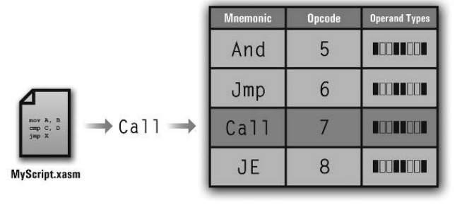

本章我们将构建XASM汇编器，将汇编代码汇编成虚拟机可以执行的二进制文件。
本章所处位置
汇编内容
根据前一章的内容可知，汇编器的主要工作是将汇编代码转换成虚拟机能解析执行的机器码。主要包含以下几个方面的内容。
汇编指令
汇编指令采用的是助记符形式，如 Mov X,4 等，最终会被翻译为如 3 2 4 这样的机器码。
要翻译自然需要一个指令查找表，当 C 语言被翻译成机器码时，参考的是 CPU 制造商提供的汇编参考手册，而这里的汇编代码会运行在我们自己的虚拟机上，那么参考手册需要我们来提供。在实现层面上，可以用语言提供的数据结构如链表、哈希表来存储所有的指令映射关系，如下图所示。

上述映射表格中，每一条记录除了存储助记符对应的操作码之外，还需要存储该指令的操作数列表，其中操作数列表中包含了各个操作数的操作符类型和数据，由于一个操作符的类型可能有几种，如 Mov X,Y 中， Y 可以是整形、浮点数、字符串或者变量，所以我们可以用 Bit Vector 来存储多种类型的情况，如下图所示：
汇编变量
由于我们的虚拟机是基于栈实现的，所以变量、数组会被汇编为基于当前栈的索引。需要注意的地方是，全局变量能够在任意地方访问，而局部变量是基于当前作用域访问，故全局变量采用从下往上的正索引值，局部变量采用基于当前栈顶向下的索引值，全局变量采用绝对定位，局部变量采用相对定位。
变量计算方法为：如果一个函数有 4 个变量， 2 个参数，那么该函数的栈帧的大小为 7(4+2+1) ，其中多加的 1 为函数返回值，四个变量的索引分别为 -1~-4 ，函数返回地址为 -5 ，两个参数索引为 -6 和 -7 。

注意上图中栈帧是以 -2 开始而不是 -1 ，主要是为记录其他数据预留了一个位置，后续章节会介绍。
汇编操作数
由上一章知道，我们的指令包含多种类型的操作数，如下图所示：
其实每条指令的操作数有两个不同点，其一是指令包含的操作数类型，其二是指令包含的操作数个数。所以只要我们记录了这两个数据，便能识别一条指令，指令被汇编后的格式如下：
汇编字符串
初一想，字符串也可以像整型、浮点数一样，直接汇编到指令流里面啊，但是这样做的结果不仅使得我们最后的指令流格式丑陋，同时也不便于优化性能。很自然的我们可以想到用索引（指针）的方式，在最后的指令流将字符串字面量替换为指向字符串表的索引，如下图所示：
汇编跳转和函数调用
函数调用和跳转指令在汇编后都会被替换为对应指令的索引，如下图所示：
观察上图会发现一个问题，在处理第 5 条语句时 Label1 在下一行，而下一行还没解析，这涉及到 forward reference （向前引用）
内存管理
如果汇编代码量很大或者为了性能考虑，可以将代码分块载入内存汇编，不过这会增加复杂性。为了实现简单我们采用全部载入内存的方式。
XVM输入部分（ XVM 汇编脚本指令）
XVM 汇编脚本代码由以下部分组成。
SetStackSize
SetStackSize能够指定脚本代码栈大小：
SetStackSize 1024如果大小为 0 或者未写该指令，按照 XVM 默认大小 1024 分配。
Func
Func _Main()
{
;代码入口
}XVM 脚本代码会在源文件中查找 _Main 函数，如果找到则以此为入口，否则需要其他函数调用代码才会执行。此外，函数不支持嵌套定义，汇编器会默认加上 Ret 语句，在函数完成时返回。
Var/Var []
XVM 汇编脚本支持单个变量和一维数组：
Var X
Var X[16]
Var Y[X]Param
Func MyFunc
{
; Declare parameters
Param U
Param V
Param W
; Declare local variables
Var X
Var Y
Var MyArray [ 16 ]
; Begin function code
Mov MyArray [ 0 ], U
Mov MyArray [ 1 ], V
Mov MyArray [ 2 ], W
}注意参数压入顺序和声明顺序，如下：
第二种方法保证了栈的索引与声明顺序一致。
Instructions
指令格式如下：
Mnemonic Operand,Operand，Operand其中 Operand 包含 Integer ,floating-point literals,String literals,variables,Array Indices,Line Label,Functions 和 Host API Calls
Line Labels
标号格式如下：
Label:Host API Function Calls
Host API 会像字符串一样处理，因为 Host API 要一直保留到运行时。
_RetVal 寄存器
_RetVal 是一个全局变量，会传递函数的返回值。
Comments
XVM 脚本支持以下两种注释：
;这是注释
Mov X,Y ;这也是注释示例
; Example script
; Demonstrates the basic layout of an XVM
; assembly-language script.
; ---- Globals ------------------------------------------------
Var GlobalVar
Var GlobalArray [ 256 ]
; ---- Functions ----------------------------------------------
; A simple addition function
Func MyAdd
{
; Import our parameters
Param Y
Param X
; Declare local data
Var Sum
Mov Sum, X
Add Sum, Y
; Put the result in the _RetVal register
Mov _RetVal, Sum
; Remember, Ret will be automatically added
}
; Just a bizarre function that does nothing in particular
Func MyFunc
{
; This function doesn't accept parameters
; But it does have local data
Var MySum
; We're going to test the Add function, so we'll
; start by pushing two integer parameters.
Push 16
Push 32
; Next we make the function call itself
Call MyAdd
; And finally, we grab the return value from _RetVal
Mov MySum, _RetVal
; Multiply MySum by 2 and store it in GlobalVar
Mul MySum, 2
Mov GlobalVar, MySum
; Set some array values
Mov GlobalArray [ 0 ], "This"
Mov GlobalArray [ 1 ], "is"
Mov GlobalArray [ 2 ], "an"
Mov GlobalArray [ 3 ], "array."
}
; The special _Main () function, which will be automatically executed
Func _Main
{
; Call the MyFunc test function
Call MyFunc
}XVM输出部分
XSE(XtremeScript Script Executable)
XASM 会将汇编脚本代码汇编为 .xse 结尾的可执行文件，内容如下：
其中各个部分都采用 继承 结构。
Main Header
Instruction Stream
指令流结构如下：
Operand Types
操作数类别代码如下：
String Table
Function Table
Host API Call Table
Assembler 实现
词法分析和语法分析
词法分析
词法分析的目的是将源代码的字符流转换为词素（Token），如下所示：
MOV SUM , X将被转换为如下 Token
TOKEN_TYPE_INSTR
TOKEN_TYPE_IDENT
TOKEN_TYPE_COMMA
TOKEN_TYPE_IDENT语法分析
词法分析是将字符流转换为一个个 Token ，而语法分析器则更进一步，将 Token 组合识别出有意义的程序结构，如下图所示：
Assembler Framework
在词法和语法分析的过程中，会产生许多中间信息，比如变量、函数、标签等。我们需要用数据结构将其保存，以供生成机器码时使用。如果使用高级语言，则可以使用高级语言提供的数据结构存储，如 C++ 的 STL ， Java 的集合等。 C 语言则可以使用简单的链表存储各种中间数据。
源代码表示
源代码可以用一个二维指针表示，如下图所示：
指令流
指令
typedef struct _Instr // An instruction
{
int iOpcode; // Opcode
int iOpCount; // Number of operands
Op * pOpList; // Pointer to operand list
}
Instr;操作数
typedef struct _Op // An assembled operand
{
int iType; // Type
union // The value
{
int iIntLiteral; // Integer literal
float fFloatLiteral; // Float literal
int iStringTableIndex; // String table index
int iStackIndex; // Stack index
int iInstrIndex; // Instruction index
int iFuncIndex; // Function index
int iHostAPICallIndex; // Host API Call index
int iReg; // Register code
};
int iOffsetIndex; // Index of the offset
}注意根据 iType 不同，操作数代表的值意义也不一样，故可以用 联合体 表示，其中 iOffsetIndex 是当 union 取 iStackIndex 时才有意义，其中 iStackIndex 代表基地址，iOffsetIndex 代表相对索引。
脚本头
typedef struct _ScriptHeader // Script header data
{
int iStackSize; // Requested stack size
int iGlobalDataSize; // The size of the script's global data
int iIsMainFuncPresent; // Is _Main () present?
int iMainFuncIndex; // _Main ()'s function index
}
ScriptHeader;链表的简单实现
typedef struct _LinkedListNode // A linked list node
{
void * pData; // Pointer to the node's data
_LinkedListNode * pNext; // Pointer to the next node in the list
}
LinkedListNode;
typedef struct _LinkedList // A linked list
{
LinkedListNode * pHead, // Pointer to head node
* pTail; // Pointer to tail node
int iNodeCount; // The number of nodes in the list
}
LinkedList;
void InitLinkedList ( LinkedList * pList )
{
// Set both the head and tail pointers to null
pList->pHead = NULL;
pList->pTail = NULL;
// Set the node count to zero, since the list is currently empty
pList->iNodeCount = 0;
}
int AddNode ( LinkedList * pList, void * pData )
{
// Create a new node
LinkedListNode * pNewNode = ( LinkedListNode * )
malloc ( sizeof ( LinkedListNode ) );
// Set the node's data to the specified pointer
pNewNode->pData = pData;
// Set the next pointer to NULL, since nothing will lie beyond it
pNewNode->pNext = NULL;
// If the list is currently empty, set both the head and tail pointers
// to the new node
if ( ! pList->iNodeCount )
{
// Point the head and tail of the list at the node
pList->pHead = pNewNode;
pList->pTail = pNewNode;
}
// Otherwise append it to the list and update the tail pointer
else
{// Alter the tail's next pointer to point to the new node
pList->pTail->pNext = pNewNode;
// Update the list's tail pointer
pList->pTail = pNewNode;
}
// Increment the node count
++ pList->iNodeCount;
// Return the new size of the linked list - 1, which is the node's index
return pList->iNodeCount - 1;
}
void FreeLinkedList ( LinkedList * pList )
{
// If the list is empty, exit
if ( ! pList )
return;
// If the list is not empty, free each node
if ( pList->iNodeCount )
{
// Create a pointer to hold each current node and the next node
LinkedListNode * pCurrNode,
* pNextNode;
// Set the current node to the head of the list
pCurrNode = pList->pHead;
// Traverse the list
while ( TRUE )
{
// Save the pointer to the next node before freeing the current one
pNextNode = pCurrNode->pNext;
// Clear the current node's data
if ( pCurrNode->pData )
free ( pCurrNode->pData );
// Clear the node itself
if ( pCurrNode )
free ( pCurrNode );
// Move to the next node if it exists; otherwise, exit the loop
if ( pNextNode )
pCurrNode = pNextNode;
else
break;
}
}
}切记链表的释放！
字符串表
复用刚才的链表即可：
int AddString ( LinkedList * pList, char * pstrString )
{
// ---- First check to see if the string is already in the list
// Create a node to traverse the list
LinkedListNode * pNode = pList->pHead;
// Loop through each node in the list
for ( int iCurrNode = 0; iCurrNode < pList->iNodeCount; ++ iCurrNode )
{
// If the current node's string equals the specified string, return
// its index
if ( strcmp ( ( char * ) pNode->pData, pstrString ) == 0 )
return iCurrNode;
// Otherwise move along to the next node
pNode = pNode->pNext;
}
// ---- Add the new string, since it wasn't added
// Create space on the heap for the specified string
char * pstrStringNode = ( char * ) malloc ( strlen ( pstrString ) + 1 );
strcpy ( pstrStringNode, pstrString );
// Add the string to the list and return its index
return AddNode ( pList, pstrStringNode );
}函数表
typedef struct _FuncNode // A function table node
{
int iIndex; // Index
char pstrName [ MAX_IDENT_SIZE ]; // Name
int iEntryPoint; // Entry point
int iParamCount; // Param count
int iLocalDataSize; // Local data size
}
FuncNode;
int AddFunc ( char * pstrName, int iEntryPoint )
{
// If a function already exists with the specified name, exit and return
// an invalid index
if ( GetFuncByName ( pstrName ) )
return -1;
// Create a new function node
FuncNode * pNewFunc = ( FuncNode * ) malloc ( sizeof ( FuncNode ) );
// Initialize the new function
strcpy ( pNewFunc->pstrName, pstrName );
pNewFunc->iEntryPoint = iEntryPoint;
// Add the function to the list and get its index
int iIndex = AddNode ( & g_FuncTable, pNewFunc );
// Set the function node's index
pNewFunc->iIndex = iIndex;
// Return the new function's index
return iIndex;
}
void SetFuncInfo ( char * pstrName, int iParamCount, int iLocalDataSize )
{
// Based on the function's name, find its node in the list
FuncNode * pFunc = GetFuncByName ( pstrName );
// Set the remaining fields
pFunc->iParamCount = iParamCount;
pFunc->iLocalDataSize = iLocalDataSize;
}
FuncNode * GetFuncByName ( char * pstrName )
{
// If the table is empty, return a NULL pointer
if ( ! g_FuncTable.iNodeCount )
return NULL;
// Create a pointer to traverse the list
LinkedListNode * pCurrNode = g_FuncTable.pHead;
// Traverse the list until the matching structure is found
for ( int iCurrNode = 0; iCurrNode < g_FuncTable.iNodeCount; ++ iCurrNode )
{
// Create a pointer to the current function structure
FuncNode * pCurrFunc = ( FuncNode * ) pCurrNode->pData;
// If the names match, return the current pointer
if ( strcmp ( pCurrFunc->pstrName, pstrName ) == 0 )
return pCurrFunc;
// Otherwise move to the next node
pCurrNode = pCurrNode->pNext;
}
// The structure was not found, so return a NULL pointer
return NULL;
}符号表
typedef struct _SymbolNode // A symbol table node
{
int iIndex; // Index
char pstrIdent [ MAX_IDENT_SIZE ]; // Identifier
int iSize; // Size (1 for variables, N for arrays)
int iStackIndex; // The stack index to which the symbol points
int iFuncIndex; // Function in which the symbol resides
}
SymbolNode;
int AddSymbol ( char * pstrIdent, int iSize, int iStackIndex, int iFuncIndex )
{
// If a label already exists
if ( GetSymbolByIdent ( pstrIdent, iFuncIndex ) )
return -1;
// Create a new symbol node
SymbolNode * pNewSymbol = ( SymbolNode * )
malloc ( sizeof ( SymbolNode ) );
// Initialize the new label
strcpy ( pNewSymbol->pstrIdent, pstrIdent );
pNewSymbol->iSize = iSize;
pNewSymbol->iStackIndex = iStackIndex;
pNewSymbol->iFuncIndex = iFuncIndex;
// Add the symbol to the list and get its index
int iIndex = AddNode ( & g_SymbolTable, pNewSymbol );
// Set the symbol node's index
pNewSymbol->iIndex = iIndex;
// Return the new symbol's index
return iIndex;
}
SymbolNode * GetSymbolByIdent ( string Ident, int FuncIndex )
{
// Traverse the linked list until a symbol with the proper
// identifier and scope is found.
// First latch onto the initial node
SymbolNode * CurrSymbol = SymbolTable.Head;
// Loop through each node in the list
for ( CurrIndex = 0; CurrIndex < SymbolTable.SymbolCount; ++ CurrIndex )
{
// Check to see if the current node matches the specified identifier
if ( CurrNode.Ident == Ident )
// Now see if their scopes are the same or overlap (global/local)
if ( CurrNode.FuncIndex == FuncIndex || CurrNode.StackIndex >= 0 )
return CurrNode;
// Otherwise move on to the next in the list
CurrNode = CurrNode.Next;
}
// The specified symbol was not found, so return NULL
return NULL;
}注意条件 if ( CurrNode.FuncIndex == FuncIndex || CurrNode.StackIndex >= 0 ) 是因为全局变量 StackIndex 从零开始。
int GetStackIndexByIdent ( char * pstrIdent, int iFuncIndex )
{
// Get the symbol's information
SymbolNode * pSymbol = GetSymbolByIdent ( pstrIdent, iFuncIndex );
// Return its stack index
return pSymbol->iStackIndex;
}
int GetSizeByIdent ( char * pstrIdent, int iFuncIndex )
{
// Get the symbol's information
SymbolNode * pSymbol = GetSymbolByIdent ( pstrIdent, iFuncIndex );
// Return its size
return pSymbol->iSize;
}标签表
typedef struct _LabelNode // A label table node
{
int iIndex; // Index
char pstrIdent [ MAX_IDENT_SIZE ]; // Identifier
int iTargetIndex; // Index of the target instruction
int iFuncIndex; // Function in which the label resides
}
int AddLabel ( char * pstrIdent, int iTargetIndex, int iFuncIndex )
{
// If a label already exists, return -1
if ( GetLabelByIdent ( pstrIdent, iFuncIndex ) )
return -1;
// Create a new label node
LabelNode * pNewLabel = ( LabelNode * ) malloc ( sizeof ( LabelNode ) );
// Initialize the new label
strcpy ( pNewLabel->pstrIdent, pstrIdent );
pNewLabel->iTargetIndex = iTargetIndex;
pNewLabel->iFuncIndex = iFuncIndex;
// Add the label to the list and get its index
int iIndex = AddNode ( & g_LabelTable, pNewLabel );
// Set the index of the label node
pNewLabel->iIndex = iIndex;
// Return the new label's index
return iIndex;
}Host API 表
复用链表即可。
LinkedList g_HostAPICallTable;
指令集查找表
typedef struct _InstrLookup // An instruction lookup
{
char pstrMnemonic [ MAX_INSTR_MNEMONIC_SIZE ]; // Mnemonic string
int iOpcode; // Opcode
int iOpCount; // Number of operands
OpTypes * OpList; // Pointer to operand list
}
typedef int OpTypes;
#define MAX_INSTR_LOOKUP_COUNT 256 // The maximum number of
// instructions the lookup table
// will hold
#define MAX_INSTR_MNEMONIC_SIZE 16 // Maximum size of an instruction
// mnemonic's string
InstrLookup g_InstrTable [ MAX_INSTR_LOOKUP_COUNT ];
InstrLookup;
int AddInstrLookup ( char * pstrMnemonic, int iOpcode, int iOpCount )
{
// Just use a simple static int to keep track of the next instruction
// index in the table.
static int iInstrIndex = 0;
// Make sure we haven't run out of instruction indices
if ( iInstrIndex >= MAX_INSTR_LOOKUP_COUNT )
return -1;
// Set the mnemonic, opcode and operand count fields
strcpy ( g_InstrTable [ iInstrIndex ].pstrMnemonic, pstrMnemonic );
strupr ( g_InstrTable [ iInstrIndex ].pstrMnemonic );
g_InstrTable [ iInstrIndex ].iOpcode = iOpcode;
g_InstrTable [ iInstrIndex ].iOpCount = iOpCount;
// Allocate space for the operand list
g_InstrTable [ iInstrIndex ].OpList = ( OpTypes * )
malloc ( iOpCount * sizeof ( OpTypes ) );
// Copy the instruction index into another variable so it can be returned
// to the caller
int iReturnInstrIndex = iInstrIndex;
// Increment the index for the next instruction
++ iInstrIndex;
// Return the used index to the caller
return iReturnInstrIndex;
}
void SetOpType ( int iInstrIndex, int iOpIndex, OpTypes iOpType )
{
g_InstrTable [ iInstrIndex ].OpList [ iOpIndex ] = iOpType;
}Operand Type Bitfield Masks 如下：
设置如下：
iInstrIndex = AddInstrLookup ( "Mov", 0, 2 );
SetOpType ( iInstrIndex, 0, OP_FLAG_TYPE_MEM_REF |
OP_FLAG_TYPE_REG );
SetOpType ( iInstrIndex, 1, OP_FLAG_TYPE_INT |
OP_FLAG_TYPE_FLOAT |
OP_FLAG_TYPE_STRING |
OP_FLAG_TYPE_MEM_REF |
OP_FLAG_TYPE_REG );除了直接将指令 硬编码 以外，我们还可以将指令用一种可解析的格式写入文件，如下：
Mov 0 2
MemRef
Int Float String MemRef
Jmp 19 1
Label通过不同的指令文件，我们的系统就可以解析不同的指令集，使得我们的汇编器扩展性增强。
总结
到目前我们的汇编器全局的数据结构如下：
// Source code representation
char ** g_ppstrSourceCode = NULL;
int g_iSourceCodeSize;
// The instruction lookup table
InstrLookup g_InstrTable [ MAX_INSTR_LOOKUP_COUNT ];
// The assembled instruction stream
Instr * g_pInstrStream = NULL;
int g_iInstrStreamSize;
// The script header
ScriptHeader g_ScriptHeader;
// The main tables
LinkedList g_StringTable;
LinkedList g_FuncTable;
LinkedList g_SymbolTable;
LinkedList g_LabelTable;
LinkedList g_HostAPICallTable;
//String table
int AddString ( LinkedList * pList, char * pstrString );
//Next up is the function table:
int AddFunc ( char * pstrName, int iEntryPoint );
FuncNode * GetFuncByName ( char * pstrName );
void SetFuncInfo ( char * pstrName, int iParamCount, int iLocalDataSize );
//Followed by the symbol and label tables:
int AddSymbol ( char * pstrIdent, int iSize, int iStackIndex, int iFuncIndex );
SymbolNode * GetSymbolByIdent ( char * pstrIdent, int iFuncIndex );
int GetStackIndexByIdent ( char * pstrIdent, int iFuncIndex );
int GetSizeByIdent ( char * pstrIdent, int iFuncIndex );
int AddLabel ( char * pstrIdent, int iTargetIndex, int iFuncIndex );
LabelNode * GetLabelByIdent ( char * pstrIdent, int iFuncIndex );
//Lastly, there’s the instruction lookup table:
int AddInstrLookup ( char * pstrMnemonic, int iOpcode, int iOpCount );
void SetOpType ( int iInstrIndex, int iOpIndex, OpTypes iOpType );
int GetInstrByMnemonic ( char * pstrMnemonic, InstrLookup * pInstr );